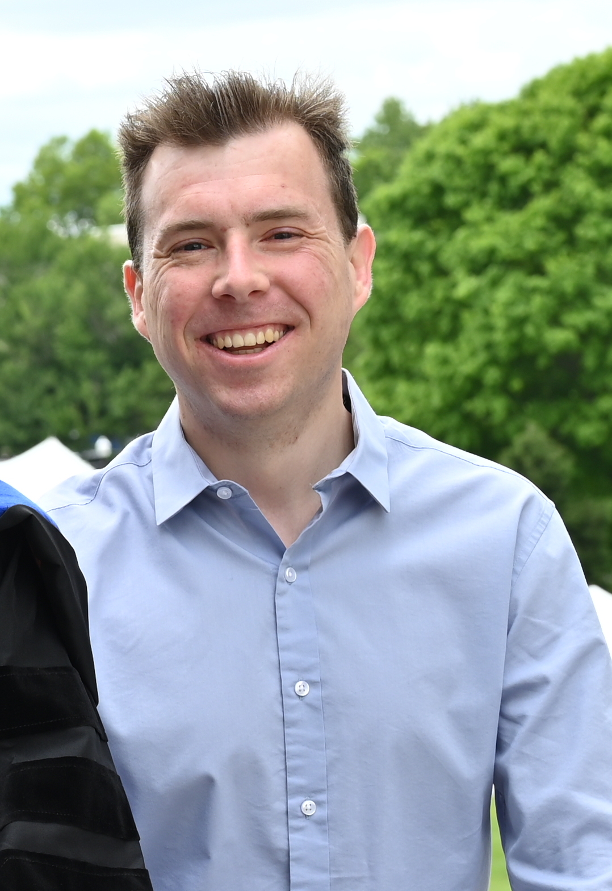

|  | Christopher Jelesnianski |
I am currently a PhD candidate in
Computer Engineering at
Virgina Tech
under the mentorship of Prof. Changwoo Min
and a member of the
Computer Systems, Memory, and OS Security Lab
(COSMOSS).
I recieved my Masters degree in Computer Engineering under the
mentorship of Prof. Binoy Ravindran
and Prof. Antonio Barbalace
also at Virginia Tech in 2015 as part of a direct PhD program.
I recieved my Bachelors degree in Electrical & Computer Engineering
from Rutgers University - New Brunswick.
I am currently seeking a full-time position in applied research focused on compilers
and system software in a broad domain from security (see publications) to robotics & flight software.
Compilers
System Software and Runtimes - from assembly to C/C++
Mechatronics
Embedded Systems
Protect the System Call, Protect (most of) the World with BASTION
Christopher Jelesnianski, Mohannad Ismail, Yeongjin Jang,
Dan Williams and Changwoo Min
(currently under review as ASPLOS 2023)
[paper]
Tightly Seal Your Sensitive Pointers with PACTight
Mohannad Ismail, Andrew Quach, Christopher Jelesnianski,
Yeongjin Jang and Changwoo Min
In Proceedings of the 31st USENIX Security Symposium (Security 2022)
[paper]
Securely Sharing Randomized Code that Flies
Christopher Jelesnianski, Jinwoo Yom, Changwoo Min and Yeongjin Jang
The ACM Journal on Digital Threats: Research and Practice (DTRAP 2022)
[paper]
VIP: Safeguard Value Invariant Property for Thwarting Critical Memory Corruption Attacks
Mohannad Ismail, Jinwoo Yom, Christopher Jelesnianski,
Yeongjin Jang and Changwoo Min
In Proceedings of the 2021 ACM SIGSAC Conference on Computer and Communications Security (CCS 2021)
[paper]
MARDU: Efficient and Scalable Code Re-randomization
Christopher Jelesnianski, Jinwoo Yom, Changwoo Min and Yeongjin Jang
In Proceedings of the 13th ACM International Systems and Storage Conference (SYSTOR 2020)
[paper |
slides]
Breaking the Boundaries in Heterogeneous-ISA Datacenters
Antonio Barbalace, Robert Lyerly, Christopher Jelesnianski,
Anthony Carno, Ho-Ren Chuang, Vincent Legout and Binoy Ravindran
In Proceedings of the 22nd ACM International Conference on Architectural Support
for Programming Languages and Operating Systems (ASPLOS 2017)
[paper]
Operating System Process and Thread Migration in Heterogeneous Platforms
Rob Lyerly, Antonio Barbalace, Christopher Jelesnianski, Vincent Legout,
Anthony Carno and Binoy Ravindran
In Proceedings of the 2016 Workshop on Multicore and Rack-Scale systems (MaRS 2016)
[paper]
Seamless Thread Migration in Heterogeneous-ISA Platforms (Poster)
Christopher Jelesnianski, Anthony Carno, Rob Lyerly,
Antonio Barbalace and Binoy Ravindran
The 25th ACM Symposium on Operating Systems Principles (SOSP 2015)
Compiler Support for Application Migration in a Heterogeneous-ISA Platform (Poster)
Rob Lyerly, Christopher Jelesnianski, Antonio Barbalace and Binoy Ravindran
The Tenth European Conference on Computer Systems (EuroSys 2015)
[abstract]
Popcorn: Bridging the Programmability Gap in Heterogeneous-ISA Platforms
Antonio Barbalace, Marina Sadini, Saif Ansary, Christopher Jelesnianski,
Akshay Ravichandran, Cagil Kendir, Alastair Murray, and Binoy Ravindran
In Proceedings of the Tenth European Conference on Computer Systems (EuroSys 2015)
[paper]
Virginia Tech Bradley Fellowship Recipient, 2013-2016
Invited to present research demo at Technology Transition Day at United States Pentagon for high ranking officials, 2016